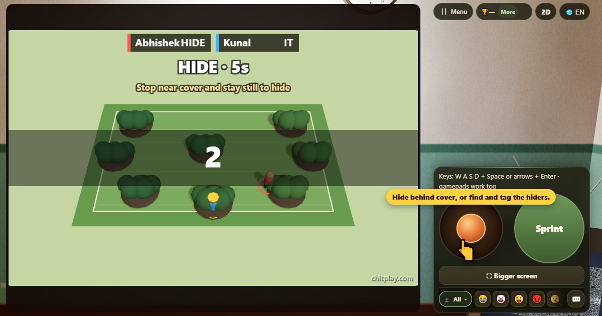

Cache-cache (Lapa Chupi)
- 👥 2–4 joueurs
- Jeux d'arcade (sur la télé, en 3D)
- 🆓
Guide en français
Cachez-vous dans la cour ou retrouvez tout le monde. Utilisez les buissons et les bancs avant la fin du temps.
English name: Lapa Chupi

Comment jouer
- À chaque partie, un joueur différent cherche. Le chercheur attend contre le mur les yeux fermés pendant que les autres ont cinq secondes pour se cacher.
- Utilise le joystick ou les flèches pour te déplacer dans la cour en 3D. Maintiens Sprint pour courir plus vite, mais seulement une seconde environ avant d'être essoufflé.
- Arrête-toi près d'un buisson, d'un banc ou d'un jeu de la cour et ne bouge plus pour te cacher. Bouger, ou laisser le chercheur s'approcher, te trahit.
- Le chercheur gagne s'il trouve tout le monde. Ceux qui sont encore cachés à la fin du temps gagnent ensemble.
- Dans les salons en ligne, la position des joueurs cachés n'est pas envoyée aux autres.
Points
Le chercheur marque un point par joueur trouvé et gagne s'il les trouve tous. Ceux qui sont encore cachés à la fin du temps gagnent ensemble et marquent plus que n'importe quel nombre de trouvailles.
Qui gagne
Joue avec des joueurs ordinateur, des amis sur un écran, à proximité ou en ligne. Les bots occupent les places libres.
Questions fréquentes
Puis-je jouer seul ?
Oui. Les joueurs ordinateur prennent les autres places.
Les joueurs en ligne voient-ils où je me cache ?
Non. La position d'un joueur caché n'est pas envoyée aux autres joueurs.
Façons de jouer
- En invité: Ni inscription ni connexion. Choisissez un nom et jouez tout de suite.
- Contre l'ordinateur: Quand personne n'est là, des joueurs de l'ordinateur prennent les places libres. Facile, normal ou difficile.
- En ligne: Asseyez-vous à une table publique avec des joueurs du monde entier.
- Entre amis, à proximité: Lancez la partie sur un téléphone et partagez le code ou le QR. Vos amis rejoignent depuis leur téléphone.
- Sur un seul téléphone: Passez-vous le téléphone à tour de rôle : un seul appareil suffit pour toute la famille.
Autres langues
- हिन्दी: लुका-छिपी
- Hinglish: Chhupan Chupai
- Español: Escondite
- Português: Esconde-esconde
- Deutsch: Verstecken
- Bahasa Indonesia: Petak Umpet
- Türkçe: Saklambaç
- Italiano: Nascondino
- 日本語: かくれんぼ
- 한국어: 숨바꼭질
- 中文: 捉迷藏
- Русский: Прятки
- اردو: چھپن چھپائی
- नेपाली: लुकामारी
- বাংলা: লুকোচুরি
- English: Lapa Chupi · Règles complètes (anglais)
Idées de jeux
Tous les jeux


ChitPlay ne comporte ni argent réel, ni paris, ni prix. Les points n'ont aucune valeur.